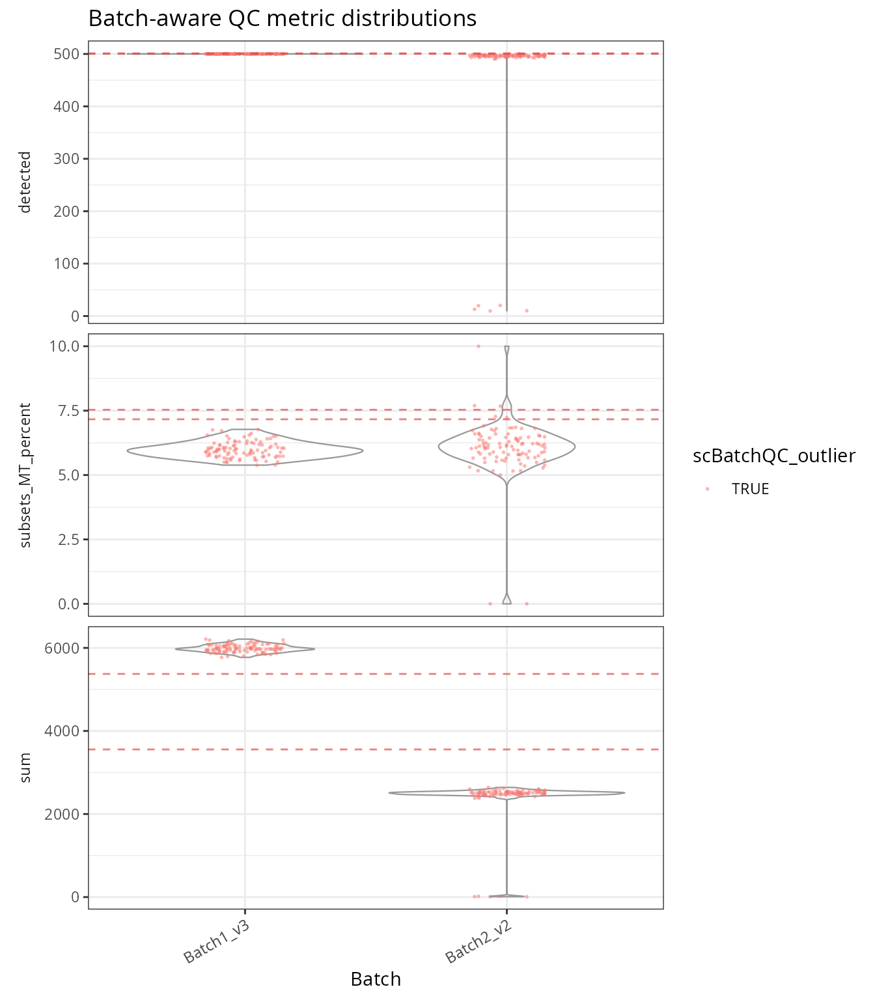

vignettes/scBatchQC_workflow.Rmd
scBatchQC_workflow.RmdscBatchQC is a Bioconductor package for
batch-aware quality control of multi-sample single-cell
RNA-seq data. It provides calibrated, per-batch QC thresholds using
empirical Bayes shrinkage, so you don’t over-filter low-depth batches or
under-filter high-depth ones.
In multi-batch single-cell RNA-seq experiments, QC thresholds can be misleading when they are applied globally across all cells or estimated independently for each small batch. This ignores or overreacts to batch-to-batch variation and leads to:
scBatchQC solves this with a hierarchical
empirical Bayes approach:
The result: each batch gets its own QC thresholds, but small batches are stabilised by borrowing information from larger ones.
scater / scuttle provide widely used tools for
computing per-cell QC metrics, visualizing QC distributions, and
identifying MAD-based outliers. scBatchQC builds on the
same core QC metrics, but focuses on multi-batch experiments by
estimating per-batch thresholds and shrinking them toward a shared
empirical Bayes prior. This stabilizes thresholds for small or low-depth
batches while preserving batch-specific calibration.
miQC uses a probabilistic model based on
mitochondrial read proportion and the number of detected genes to
identify low-quality cells. scBatchQC instead provides a
batch-aware thresholding framework for library size, detected genes, and
mitochondrial fraction, with harmonized per-batch summaries returned
directly in the SingleCellExperiment.
scDblFinder detects likely doublets from the
expression profiles of individual cells.
scBatchQC::estimateBatchDoubletRate() is complementary: it
estimates the expected doublet rate per batch from experimental metadata
such as cells loaded and protocol, which is useful for planning,
reporting, and checking expression-based doublet calls.
if (!requireNamespace("BiocManager", quietly = TRUE)) {
install.packages("BiocManager")
}
BiocManager::install("scBatchQC")We create a toy dataset with two batches that mimic a common real scenario: one high-depth batch and one lower-depth batch with a few damaged cells.
library(scBatchQC)
library(SingleCellExperiment)
set.seed(123)
n_genes <- 500
# Batch 1: high-depth fresh tissue (10x v3)
counts_b1 <- matrix(
rpois(n_genes * 100, lambda = 12),
nrow = n_genes, ncol = 100
)
# Batch 2: lower-depth cryopreserved (10x v2)
# with 5 deliberately damaged cells
counts_b2 <- matrix(
rpois(n_genes * 100, lambda = 5),
nrow = n_genes, ncol = 100
)
counts_b2[, 1:5] <- floor(counts_b2[, 1:5] / 10)
# Combine and label
counts <- cbind(counts_b1, counts_b2)
rownames(counts) <- paste0("Gene", seq_len(n_genes))
rownames(counts)[1:30] <- paste0("MT-", seq_len(30))
colnames(counts) <- paste0("Cell", seq_len(200))
sce <- SingleCellExperiment(assays = list(counts = counts))
sce$batch <- rep(c("Batch1_v3", "Batch2_v2"), each = 100)
sce
#> class: SingleCellExperiment
#> dim: 500 200
#> metadata(0):
#> assays(1): counts
#> rownames(500): MT-1 MT-2 ... Gene499 Gene500
#> rowData names(0):
#> colnames(200): Cell1 Cell2 ... Cell199 Cell200
#> colData names(1): batch
#> reducedDimNames(0):
#> mainExpName: NULL
#> altExpNames(0):The central function batchAwareQCMetrics() computes
three per-cell QC metrics and flags outliers using batch-harmonised
thresholds:
| Metric | Column added | What it measures |
|---|---|---|
| Library size | scBatchQC_sum |
Total UMI counts |
| Genes detected | scBatchQC_detected |
Number of expressed genes |
| MT fraction | scBatchQC_subsets_MT_percent |
Mitochondrial % |
| Outlier flag | scBatchQC_outlier |
Should this cell be removed? |
| Reason | scBatchQC_outlier_reason |
Which metric(s) failed |
sce <- batchAwareQCMetrics(
sce,
batch = "batch",
nmads = 3,
shrink_strength = 0.5
)
# Columns added
grep("^scBatchQC", names(colData(sce)), value = TRUE)
#> [1] "scBatchQC_sum" "scBatchQC_detected"
#> [3] "scBatchQC_subsets_MT_percent" "scBatchQC_outlier"
#> [5] "scBatchQC_outlier_reason"
# Outlier counts per batch
table(Outlier = sce$scBatchQC_outlier, Batch = sce$batch)
#> Batch
#> Outlier Batch1_v3 Batch2_v2
#> TRUE 100 100nmads (default: 3) — Number of MADs
from the median to set the threshold. Lower = stricter (more cells
flagged). A typical range is 2.5–4.
shrink_strength (default: 0.5) —
Controls how much per-batch estimates are pulled toward the global
mean:
| Value | Behaviour | When to use |
|---|---|---|
| 0 | Pure per-batch thresholds | Many cells per batch (>500) |
| 0.5 | Balanced (default) | Most experiments |
| 0.7–0.9 | Strong shrinkage | Small batches (<50 cells) |
| 1 | Fully pooled (ignores batch) | Single-batch fallback |
plotBatchQC() shows violin plots of each metric per
batch, with threshold lines and outlier highlights:
plotBatchQC(sce, batch = "batch")
QC distributions per batch. Dashed red lines = harmonised thresholds. Red points = flagged outliers.
estimateBatchDoubletRate() models the expected doublet
rate per batch based on how many cells were loaded and the protocol
used:
cells_loaded <- c(Batch1_v3 = 8000, Batch2_v2 = 5000)
sce <- estimateBatchDoubletRate(
sce,
batch = "batch",
cells_loaded = cells_loaded,
protocol = c(Batch1_v3 = "10x_v3", Batch2_v2 = "10x_v2")
)
# Estimated doublet rate per batch
tapply(sce$scBatchQC_doublet_rate, sce$batch, unique)
#> Batch1_v3 Batch2_v2
#> 0.0640 0.0375The model uses the empirical relationship from 10x Genomics: ~0.8% doublets per 1,000 cells loaded on the Chromium controller.
Before committing to a specific nmads, use
harmonizeQCThresholds() to see how many cells would be
flagged at different stringencies — without re-running the full
pipeline:
sweep <- lapply(c(2, 2.5, 3, 3.5, 4), function(n) {
r <- harmonizeQCThresholds(sce, batch = "batch", nmads = n)
data.frame(
nmads = n,
flagged = sum(rowSums(as.data.frame(r$n_flagged)))
)
})
do.call(rbind, sweep)
#> nmads flagged
#> 1 2.0 339
#> 2 2.5 222
#> 3 3.0 222
#> 4 3.5 215
#> 5 4.0 215How to choose nmads: Look for the
“elbow” — the point where flagged cells stop increasing sharply. Typical
scRNA-seq experiments use nmads = 3 (default) and flag 3–10% of
cells.
Once you’re satisfied with the QC, filter and pass to downstream analysis:
For programmatic access to batch-level summaries, use the
BQCResult S4 class:
library(S4Vectors)
result <- BQCResult(
qcFlags = DataFrame(outlier = sce$scBatchQC_outlier),
doubletScores = sce$scBatchQC_doublet_rate,
batchSummary = estimateBatchDoubletRate(
sce,
batch = "batch",
cells_loaded = cells_loaded,
return_sce = FALSE
)
)
result
#> BQCResult
#> Cells : 200
#> Batches : 2
#> QC metrics : outlier
#> Doublet range : 0.038 - 0.064Access individual slots with:
head(qcFlags(result))
#> DataFrame with 6 rows and 1 column
#> outlier
#> <logical>
#> 1 TRUE
#> 2 TRUE
#> 3 TRUE
#> 4 TRUE
#> 5 TRUE
#> 6 TRUE
head(doubletScores(result))
#> Batch1_v3 Batch1_v3 Batch1_v3 Batch1_v3 Batch1_v3 Batch1_v3
#> 0.064 0.064 0.064 0.064 0.064 0.064
batchSummary(result)
#> DataFrame with 2 rows and 5 columns
#> batch n_cells_obs cells_loaded doublet_rate_est protocol
#> <character> <integer> <numeric> <numeric> <character>
#> Batch1_v3 Batch1_v3 100 8000 0.064 10x_v3
#> Batch2_v2 Batch2_v2 100 5000 0.040 10x_v3| Scenario | Behaviour |
|---|---|
Single batch (no batch argument) |
Falls back to global MAD — equivalent to
scuttle::isOutlier
|
| Very small batch (<50 cells) | Increase shrink_strength to 0.7–0.9 |
| No MT genes found | MT metric is silently skipped; QC uses library size and gene count only |
| All cells flagged | Your nmads is too strict, or data has very low variance
— try nmads = 4
|
# Step 1: batch-aware QC
sce <- batchAwareQCMetrics(sce, batch = "batch", nmads = 3)
# Step 2: doublet rates
sce <- estimateBatchDoubletRate(
sce,
batch = "batch",
cells_loaded = my_cells_loaded
)
# Step 3: visualise
plotBatchQC(sce, batch = "batch")
# Step 4: filter
sce_clean <- sce[, !sce$scBatchQC_outlier]
# Step 5: downstream (scran, Seurat, Harmony, etc.)
sessionInfo()
#> R version 4.6.2 (2026-10-29)
#> Platform: x86_64-pc-linux-gnu
#> Running under: Ubuntu 26.04.1 LTS
#>
#> Matrix products: default
#> BLAS: /usr/lib/x86_64-linux-gnu/blas/libblas.so.3.12.1
#> LAPACK: /usr/lib/x86_64-linux-gnu/lapack/liblapack.so.3.12.1; LAPACK version 3.12.0
#>
#> locale:
#> [1] LC_CTYPE=en_US.UTF-8 LC_NUMERIC=C
#> [3] LC_TIME=en_US.UTF-8 LC_COLLATE=en_US.UTF-8
#> [5] LC_MONETARY=en_US.UTF-8 LC_MESSAGES=en_US.UTF-8
#> [7] LC_PAPER=en_US.UTF-8 LC_NAME=C
#> [9] LC_ADDRESS=C LC_TELEPHONE=C
#> [11] LC_MEASUREMENT=en_US.UTF-8 LC_IDENTIFICATION=C
#>
#> time zone: Asia/Kolkata
#> tzcode source: system (glibc)
#>
#> attached base packages:
#> [1] stats4 stats graphics grDevices utils datasets methods
#> [8] base
#>
#> other attached packages:
#> [1] SingleCellExperiment_1.35.2 SummarizedExperiment_1.43.0
#> [3] Biobase_2.73.2 GenomicRanges_1.65.4
#> [5] Seqinfo_1.3.2 IRanges_2.47.5
#> [7] S4Vectors_0.51.10 BiocGenerics_0.59.12
#> [9] generics_0.1.4 MatrixGenerics_1.25.0
#> [11] matrixStats_1.5.0 scBatchQC_0.99.3
#> [13] BiocStyle_2.41.0
#>
#> loaded via a namespace (and not attached):
#> [1] gtable_0.3.6 xfun_0.62 bslib_0.12.0
#> [4] ggplot2_4.0.3 htmlwidgets_1.6.4 lattice_0.23-1
#> [7] scrapper_1.7.11 vctrs_0.7.3 tools_4.6.2
#> [10] parallel_4.6.2 tibble_3.3.1 pkgconfig_2.0.3
#> [13] BiocNeighbors_2.7.3 Matrix_1.7-6 RColorBrewer_1.1-3
#> [16] S7_0.2.2 desc_1.4.3 lifecycle_1.0.5
#> [19] compiler_4.6.2 farver_2.1.2 textshaping_1.0.5
#> [22] codetools_0.2-20 htmltools_0.5.9 sass_0.4.10
#> [25] yaml_2.3.12 pkgdown_2.2.1 pillar_1.11.1
#> [28] jquerylib_0.1.4 BiocParallel_1.47.0 DelayedArray_0.39.8
#> [31] cachem_1.1.0 abind_1.4-8 tidyselect_1.2.1
#> [34] digest_0.6.39 dplyr_1.2.1 bookdown_0.48
#> [37] labeling_0.4.3 fastmap_1.2.0 grid_4.6.2
#> [40] cli_3.6.6 SparseArray_1.13.4 magrittr_2.0.5
#> [43] S4Arrays_1.13.2 withr_3.0.3 scales_1.4.0
#> [46] rmarkdown_2.32 XVector_0.53.0 otel_0.2.0
#> [49] ragg_1.5.2 beachmat_2.29.3 evaluate_1.0.5
#> [52] knitr_1.52 rlang_1.3.0 Rcpp_1.1.2
#> [55] glue_1.8.1 BiocManager_1.30.27 jsonlite_2.0.0
#> [58] R6_2.6.1 systemfonts_1.3.2 fs_2.1.0